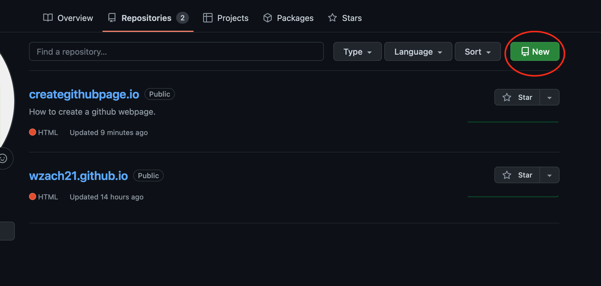

1. Start by creating a GitHub account if you don't already have one.
2. Go to your profile, select repositories, and then select New. A repository will allow you to store all relevant files to your project, easily push new updates (git), and more.
3. Select your account under Owner and enter a name for your repository. Make sure to end it in .io if you are trying to have a webpage!
4. You will now be presented with several options to add your project files or even create new ones. This is where you will upload your HTML,CSS, or anything else you will be using for your webpage.
5. After uploading your index.html and any other files you need select commit.
6. Next, navigate to settings, and then the pages tab.
7. Under select branch, choose main, and then save.
8. Now navigate to your repository's index.html in your web browser!
For me this would be https://wzach21.github.io/example.io/index.html
Success! You now know how to create a github repository and deploy it as a webpage!